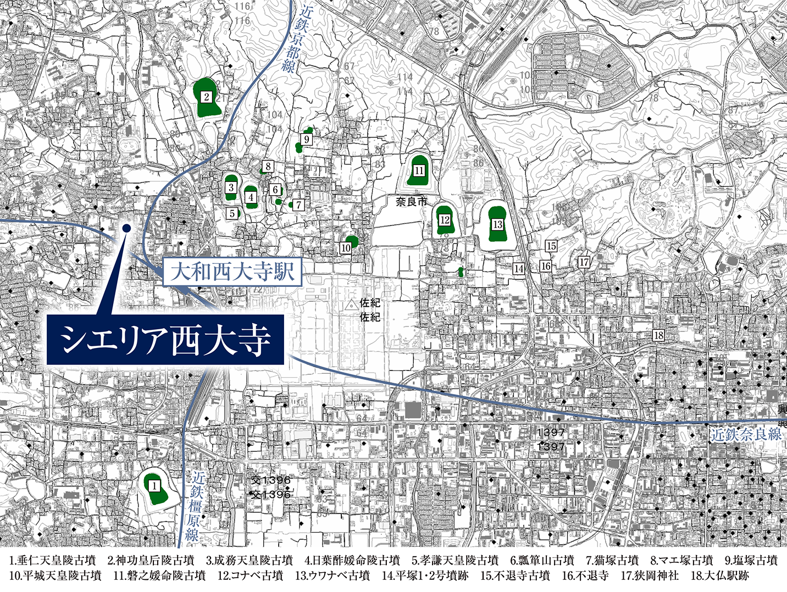
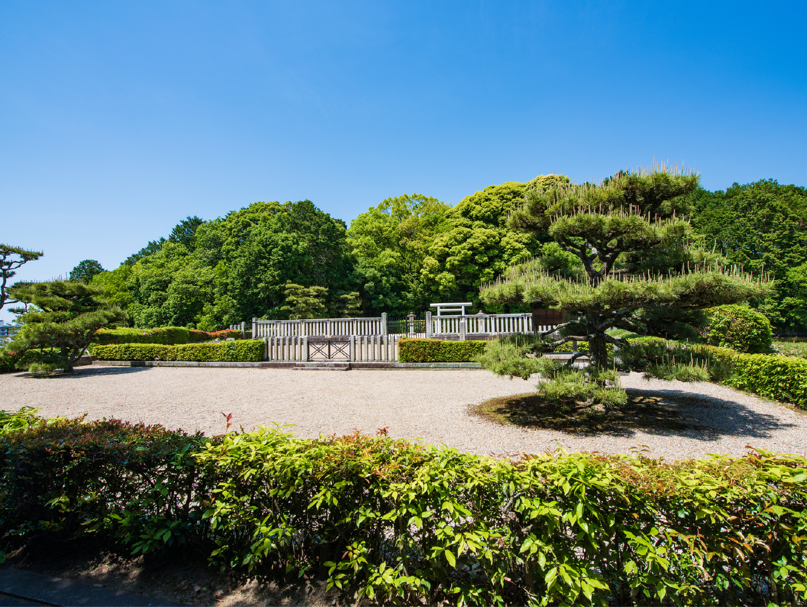

関電不動産開発がお届けする、新築分譲マンション「シエリア西大寺」の公式サイトです。近鉄「大和西大寺」駅徒歩7分、「大阪難波」駅・「京都」駅へ直結。奈良史上初、先進のZEH-M・低炭素建築物認定レジデンス。総61邸
歴史
日本の象徴として、
絢爛たる時代を築いた地。
歴史
世界遺産「平城京」や「西大寺」、
古墳群に囲まれた歴史の風情薫り立つエリア。
第43代・元明天皇時代に、
地の相を占い「藤原京」から遷都された、奈良時代の首都「平城京」。
シエリア西大寺はその北西端の一角に立地。
「平城京」は西暦710年に、現在の奈良市に造営された日本の首都。元明天皇が律令制（刑罰や政治、経済を司る法体系）にもとづいた政治をおこなう中心地として、それまでの都だった「藤原京」から遷都し、新しい大規模な都を完成させました。「平城京」の中心部には、政治・儀式の場である「大極殿」「朝堂院」天皇の宮殿である「内裏（だいり）」、役所業務を行う「官衙（かんが）」など、都を治める官公庁が集まっていました。現在は都の中枢であった「平城宮」のみが「平城宮跡歴史公園」として開放されています。
「朱雀大路」をメインストリートに、
数々の歴史的建造物を残した「平城京」。
往時の「平城京」は総面積2,500ヘクタールを誇り、様々な歴史的建築物が集積。正面の「朱雀門」から南に伸びる幅約74ｍの「朱雀大路」をメインストリートに、近年「平城宮歴史跡歴史公園」のシンボルとして復元された「太極殿」をはじめ、東に「法華寺」「海竜王寺」、南に「唐招提寺」などが点在しています。本件にほど近い「西大寺」も最北端の「一条北大路」西詰め近くに立地。碁盤の目のように美しく整備された王都には、当時10万人以上もの人が暮らしていたようです。
国家の守護神を祀るため、
第46・48代称徳天皇（孝謙天皇）により建立。
壮大な伽藍を誇った、「平城京」を代表する大寺院「西大寺」。
西暦765年、称徳（しょうとく）天皇のご勅願により創建された「西大寺」。父・聖武天皇が創建した「平城京」の東側に位置する「東大寺」に対し、その西側に位置することから「西大寺」と名付けられました。当時の寺領は今よりもかなり広く、約48ヘクタールの境内には「薬師・弥勒金堂」「東西両塔」「四王院」「十一面堂院」など、110を超える堂舎が甍を列ね、「南都七大寺」にふさわしい壮麗な大伽藍を誇っていたようです。政治を司る「大極殿」にも近く、様々な役割を果たしていました。

「平城京」の一角、さらに「西大寺」の一角という
由緒を誇る「シエリア西大寺」の価値。
最盛期の「西大寺」が、現在の「大和西大寺」駅をもその境内に含む広大な寺域なを誇っていたことを偲ばせる「西大寺伽藍絵図」。しかも東側に鎮座する当時の日本の王城、「平城宮」と肩を並べていることが分かります。さらに、この絵図によって、本件は「平城京」の西北エリア内にあって、当時の「西大寺」一角でもあったことが読み取れます。現地周辺の発掘調査によって当時の遺構・遺物も見つかっていますが、まだまだ未解決な部分も多く、ミステリアスな歴史がロマンをかきたてます。
「大和西大寺」駅の北東側に広がり、
太古の息吹を今に伝える、「佐紀古墳群」。
複数の前方後円墳などが点在。
全長200メートル超えの大型の前方後円墳8基を含む円墳、方墳など18基の様々な古墳が現存。
天皇陵や皇后陵に比定されているものも多く、この地の絢爛たる歴史の証しとなっています。
- 
- 